[10-2] MPU6050简介 — 学习笔记
- 课程：江协科技《STM32入门教程-2023版 细致讲解 中文字幕》
- 视频：BV1th411z7sn?p=32，50:27（3027 秒）
- 素材：252 帧关键帧（每 12 秒，宽 1280px）+ PP-OCRv4 画面硬字幕 OCR（642 段）；关键截图 16 张随笔记收录（源图在
vidsum_out/stm32_p32/frames/，站内图片在assets/images/stm32-32/） - 字幕情况：该集 B 站没有 CC/AI 字幕，文本由画面烧录的中文字幕 OCR 得到（source=subtitle-ocr）；错字主要是
I2C被识成「12C」（18 处）、加速度→「功速度/加可速度」、偏航→「扁航」、详细→「洋细」、看到→「香到」，并混入了手册页面水印（CONFIDENTIAL & PROPRIETARY、PRELIMINARY、InvenSense）与整句英文正文——这些不是老师口述，已剔除/校正（清单见文末「存疑」）。 - 本集定位：这是模块 10 的理论课（芯片精读）——承接上集 I2C 时序，把 MPU6050 这颗芯片讲清楚：全程 PPT + 两份 PDF 手册（产品说明书
PS-MPU-6000A-00 Rev 3.2、寄存器映像RM-MPU-6000A-00 Rev 3.2）逐页翻读，本集没有写一行代码；片尾 50:12「接下来的任务就是实现 I2C 通信，读写这里的寄存器来操控 MPU6050」——软件 I2C 代码在 [10-3]、硬件 I2C 在 [10-4]。
一句话结论
MPU6050 是一个 6 轴姿态传感器：能测芯片自身 X/Y/Z 三轴的加速度（加速度计）和三轴的角速度（陀螺仪），经数据融合可得到姿态角（欧拉角），常用于平衡车、飞行器等需要感知自身姿态的场景；再集成 3 轴磁场就是 9 轴、再加气压计就是 10 轴。欧拉角是机体相对初始三个轴的夹角（飞机机头左右转的那个轴的夹角叫偏航角 Yaw，另有横滚/俯仰）——本集重点是 I2C，不涉及姿态解算。加速度计的原理：机械模型是弹簧 + 电位器，滑块受加速度移动带动电位器、测分压电压，由 F = ma 用「测到的力」反推加速度；芯片内可想象成六个测力计组成的正方体 + 单位质量小球——静置水平时 X/Y 为 0、Z 为 +1g（小球压底面），自由落体时三轴全 0，向左倾斜时底面和左面同时受力；只用加速度计求倾角只在静止时准确（运动加速度会干扰，如汽车加速、斜坡停车）。陀螺仪的机械模型是旋转轮 + 平衡环 + 电位器，靠角动量守恒保持转轴方向，外部转动时平衡环产生角度偏差；但要注意：MPU6050 内部的陀螺仪测的是「角速度」而不是角度（结构/工艺差异），角速度积分可得到角度，但误差会累积、时间长了会漂移——所以加速度计是「静态稳定」、陀螺仪是「动态稳定」，两者特性正好互补，实际是取长补短做数据融合（本集只讲思路）。参数：16 位 ADC，量化范围 −32768～32767（二进制补码，两个字节）；加速度计满量程 ±2/±4/±8/±16 g（满量程越小分辨率越细）；陀螺仪满量程 ±250/±500/±1000/±2000 °/s；可配置数字低通滤波器、时钟源、采样分频；I2C 从机地址：7 位 1101000（AD0=0）/ 1101001（AD0=1）——用十六进制表示就是 0x68；若把读写位也并进来则是 0xD0（写）/ 0xD1（读）（作者偏爱的表示法）。硬件电路：模块上有 3.3V LDO（VDD 只能 2.375～3.46V，不能直接接 5V，模块 VCC 端可接 3.3～5V）、SCL/SDA 各 4.7KΩ 上拉、电源指示灯、排针；引脚功能：VCC/GND 电源、SCL/SDA I2C 通信、XCL/XDA 主机 I2C 通信（扩展磁力计/气压计用）、AD0 从机地址最低位（电路默认弱下拉到 GND）、INT 中断信号输出。框图：三轴加速度计与三轴陀螺仪各经 ADC 进 Sensor Registers，另有 Temp Sensor、Self test（自测/验芯片好坏）、电荷泵（CPOUT 外接电容，陀螺仪需升压）、FIFO、Config Registers、Slave I2C and SPI Serial Interface（和 STM32 通信）、Master I2C Serial Interface + 接口旁路选择器（去控制扩展设备）、DMP（数字运动处理器，硬件姿态解算）、Bias & LDO。产品说明书要点：电气特性表（VDD 2.375/3.46V、温度传感器 −40～+85℃、灵敏度 340 LSB/℃、零点偏移 −521 LSB）、绝对最大额定值 VDD −0.5～+6V（超 6V 损坏）、I2C 通信时序表（Single-Byte Write：S + AD+W + RA + DATA + P，从机三个 ACK；Burst Write 连续多字节；指定地址读最后一个数据给非应答）。寄存器是本集重点：总表（Addr Hex/Dec、Register Name、Serial I/F、Bit7～Bit0）；SMPLRT_DIV（0x19 / 25）：Sample Rate = 陀螺仪输出率 / (1 + SMPLRT_DIV)，DLPF 关＝8kHz、开＝1kHz，加速度计固定 1kHz；CONFIG（0x1A / 26）：EXT_SYNC_SET（外部同步）+ DLPF_CFG（数字低通滤波，抖动大就开）；GYRO_CONFIG（0x1B / 27）：XG_ST/YG_ST/ZG_ST 自测位 + FS_SEL[1:0] 满量程（0=±250、1=±500、2=±1000、3=±2000 °/s）；ACCEL_CONFIG（0x1C / 28）：XA_ST/YA_ST/ZA_ST + AFS_SEL（0=±2g→16384 LSB/mg、1=±4g→8192、2=±8g→4096、3=±16g→2048）+ ACCEL_HPF 高通滤波；数据寄存器：加速度/温度/陀螺仪各轴均为 16 位、二进制补码，_H 高字节、_L 低字节，读出来把高 8 位左移 8 位再或上低 8 位、存进 int16 就得到有符号值；PWR_MGMT_1（0x6B / 107）：DEVICE_RESET / SLEEP / CYCLE / TEMP_DIS / CLKSEL（上电默认内部 8MHz 振荡器，强烈建议改用陀螺仪 PLL 作时钟源更稳；CLKSEL：0=内部 8M、1～3=XYZ 陀螺 PLL、4=外部 32.768k、5=外部 19.2M、6=保留、7=停时钟）；PWR_MGMT_2（0x6C / 108）：LP_WAKE_CTRL 唤醒频率（1.25/2.5/5/10Hz）+ STBY_XA/YA/ZA/XG/YG/ZG 各轴待机；WHO_AM_I（0x75 / 117）：只读、固定 0x68（中间 6 位就是 I2C 地址、AD0 不影响它）；手册注释：除 Register 107 复位值 0x40、Register 117 复位值 0x68 外，其余寄存器复位值都是 0x00——也就是说芯片上电默认处于睡眠模式（SLEEP=1），必须先清 SLEEP 才能操作其它寄存器。
0. 本集定位：理论课（芯片手册精读），代码在 10-3/10-4
- 本集是纯理论课：00:00 承接上集最后一页（I2C「指定地址读」时序），之后全程 PPT + 两份 PDF 手册逐页精读，没有打开 Keil 写代码。
- 本集讲什么：MPU6050 这颗芯片——它是什么（6 轴姿态传感器）、怎么测（加速度计/陀螺仪原理）、有哪些参数、模块电路与引脚、内部框图、手册里的电气特性与 I2C 时序、以及要操作的寄存器。
- 片尾 50:12：「接下来的任务就是实现 I2C 通信，读写这里的寄存器来操控 MPU6050」——软件 I2C 代码在 [10-3]，硬件 I2C 在 [10-4]。
- 本集不涉及：姿态解算的具体算法/DMP 库使用、SPI 时序细节、FIFO 的用法（作者明确说「本节暂时不用」）。
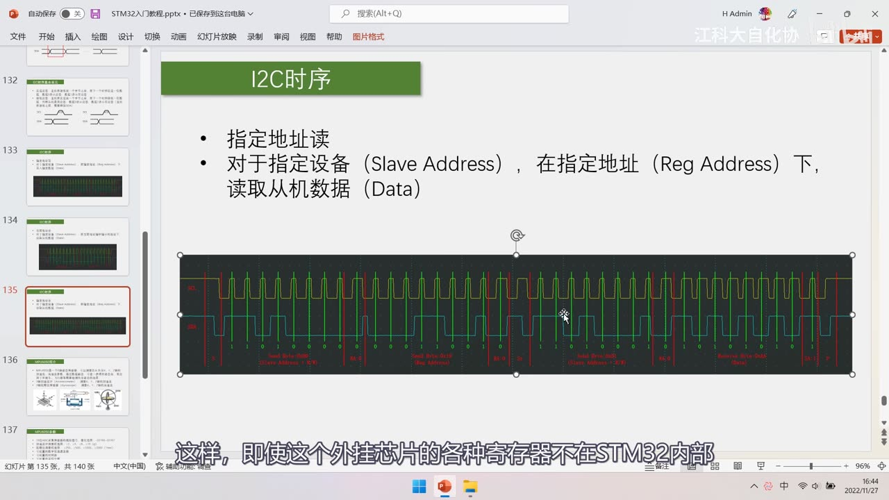
图 1：开场承接上集——PPT「I2C时序」页（指定地址读：对于指定设备、在指定地址下读取从机数据）与上集的整帧波形；字幕「这样，即使这个外挂芯片的各种寄存器不在STM32内部」
1. 资料：两份手册
- 资料「MPU6050」文件夹里有两份手册：
- 产品说明书（PS-MPU-6000A-00，Revision 3.2，11/16/2011）——芯片是什么、有什么特性、电气参数、时序图；
- 寄存器映像手册（RM-MPU-6000A-00，Revision 3.2）——Register Map 总表 + 每个寄存器每一位的详细解释；
- 写代码、实际操作硬件的时候，寄存器描述是必不可少的；英文不好可以用翻译软件辅助看。
2. MPU6050 简介与姿态传感原理
2.1 6 轴姿态传感器
- MPU6050 是一个 6 轴姿态传感器：可以测量芯片自身 X、Y、Z 三轴的加速度和角速度，通过数据融合可以进一步得到姿态角，常用于平衡车、飞行器等需要检测自身姿态的场景；
- 组成：3 轴加速度计（Accelerometer） 测 X/Y/Z 加速度 + 3 轴陀螺仪传感器（Gyroscope） 测 X/Y/Z 角速度；芯片上标注了 XYZ 轴的定义方向（垂直于芯片表面的轴为 Z 轴）；
- 轴数是怎么算的：3 轴加速度 + 3 轴角速度 = 6 轴；再集成 3 轴磁场强度测量 → 9 轴姿态传感器；再加一个气压传感器 → 10 轴（气压值反映高度，海拔越高气压越低，所以气压计单独测垂直地面的高度信息）。
2.2 欧拉角与偏航角
- 通过数据融合得到的姿态角通常就叫欧拉角——欧拉角就是机体相对于初始三个轴的夹角；
- 以飞机为例：机身保持水平、机头向左或向右转，这个轴的夹角叫作偏航（Yaw）；类似地还有横滚、俯仰（本集只提偏航这一个名字）；
- 欧拉角能清晰表达物体此刻的姿态——所以做飞行器、平衡车时，得到精确稳定的欧拉角至关重要；
- 但本集侧重点是 I2C 通信，姿态解算的内容暂时不涉及。
2.3 加速度计原理
- 机械模型：中间一个可以左右滑动的小滑块，两边各有一根弹簧，滑块上带动滑动电位器——滑块移动 → 电位器分压变化 → 输出电压变化，测这个电压就能得到滑块所受的加速度；
- 根据牛顿第二定律 F = ma：想测加速度 a，就去测它所受的力 F（m 已知为滑块质量）——「所以你听这个名字感觉很高大上，其实就是测力」；
- 芯片内的等效模型：想象芯片里有六个测力的「秤」组成一个正方体、中间放一个大小正好的单位质量小球，小球压在那个秤面上，那个面就有读数——正方体六个面测到的力，就是三轴的加速度值：
- 静置水平放在地球上：只有底面受小球压力 → X/Y 轴输出为 0，Z 轴输出为 +1g；
- 自由落体：所有面都不受力 → X/Y/Z 全为 0；
- 向左倾斜放置：底面和左面同时受力 → 由这两个面的分量可以用三角函数算出「向左的倾角」；
- ⚠ 只用加速度计求倾角，只在芯片静置时正确：加速度分重力加速度和运动加速度，物体运动时（汽车突然加速、停在斜坡上）会同时受座椅底面和靠背的力，三角函数算出的倾角会被运动加速度干扰——「当物体运动起来了，这个角度会受影响而变得不准确」。
2.4 陀螺仪原理
- 机械模型：外部是三个轴的平衡环，中间是高速旋转的旋转轮，连接处有电位器；
- 角动量守恒：旋转轮高速旋转时具有保持原有角动量的趋势，这个趋势能保持旋转轴方向不变——当外部物体方向转动时，内部的旋转轴方向并不转动，于是在平衡环连接处产生角度偏差；
- 从机械模型看，陀螺仪似乎可以直接得到角度；但 MPU6050 内部这颗陀螺仪，由于结构差异/工艺限制，测的实际上是「角速度」（务必注意）：
- 它测的是绕 X/Y/Z 轴旋转的角速度；
- 可以想象成游乐园的旋转飞椅：转起来时，对向两个椅子飞起来的距离或夹角就反映绕该轴的角速度；
- 想由角速度得到角度：对角速度做积分即可；但误差会不断累积——「角速度积分得到的角度，经不起时间的考验」；
- 互补特性：加速度计是「静态稳定」（运动时不准，但长期不漂），陀螺仪是「动态稳定」（运动时准确，但积分会漂）——两种传感器特性正好互补，所以实际做法是取长补短做数据融合（大致思路：静止时信加速度计、运动时信陀螺仪）；实际的姿态解算会更复杂，本集不展开。
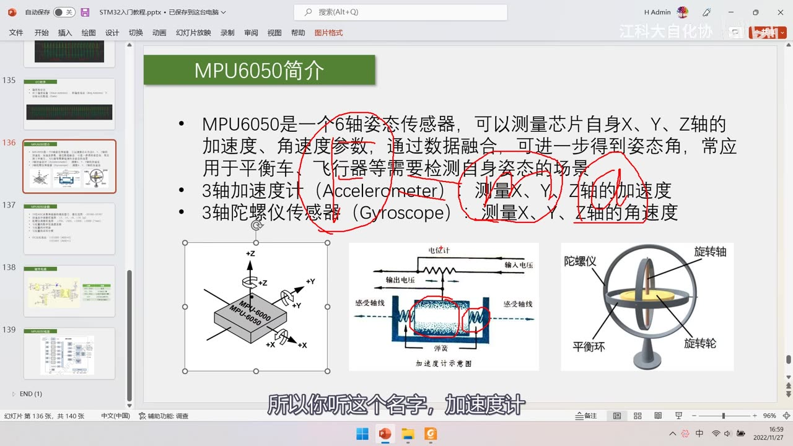
图 2：PPT「MPU6050简介」——MPU6050 是一个 6 轴姿态传感器，可测量芯片自身 X/Y/Z 的加速度、角速度，通过数据融合可进一步得到姿态角，常用于平衡车、飞行器等；3 轴加速度计（Accelerometer）测 X/Y/Z 加速度；3 轴陀螺仪传感器（Gyroscope）测 X/Y/Z 角速度；下方三张图：MPU-6000/MPU-6050 的 XYZ 轴定义、加速度计示意图（弹簧 + 电位器，红笔圈标）、陀螺仪机械模型（标注旋转轴、平衡环、旋转轮）；字幕「所以你听这个名字，加速度计」
3. 参数与分辨率
对比上一节学的 ADC，这里的「AD 值 ↔ 物理量」同样是线性的，只是参考量变成了「满量程」：满量程对应 AD 最大值。
| 项目 | 数值 | 说明 |
|---|---|---|
| ADC 位数 | 16 位 | 量化输出 2 的 16 次方 = 65536 个数；因为有正负，所以是有符号数，范围 −32768～32767 |
| 加速度计满量程 | ±2 / ±4 / ±8 / ±16（g） | 1 g = 9.8 m/s²；运动剧烈选大量程、要精细选小量程 |
| 陀螺仪满量程 | ±250 / ±500 / ±1000 / ±2000（°/sec） | 同上 |
| 可配置项 | 数字低通滤波器、时钟源、采样分频 | 低通滤波让输出更平滑；时钟源经分频决定 AD 转换快慢 |
| 从机地址 | 1101000（AD0=0）/ 1101001（AD0=1） | 7 位地址 |
- 满量程越大、分辨率越粗：例如选 ±16g 时，AD 最大值 32767 对应 16g；选 ±2g 时 32768 对应 2g → 满量程越小，测量越细腻（要把满量程选择留够余量，别让正常数据超量程）。
3.1 地址的两种表示（0x68 与 0xD0/0xD1）
- 7 位二进制地址 1101000 换算成十六进制就是 0x68——所以有的地方说「MPU6050 的从机地址是 0x68」；
- 但回忆 I2C 时序：发送的 1 个字节里，高 7 位是从机地址、最低位是读写位——如果认为 0x68 是从机地址，发送时就要先把 0x68 左移 1 位、再按位或上读写位（读 1 写 0）：
0x68 << 1 = 0xD0，0xD0 是写地址、0xD1 是读地址； - 两种表示方式在实际中都有出现：手册/官方多用「0x68 + 读写位」，作者个人比较喜欢把读写位并入的 0xD0/0xD1 表示——本课程后续代码用的是 0xD0/0xD1。
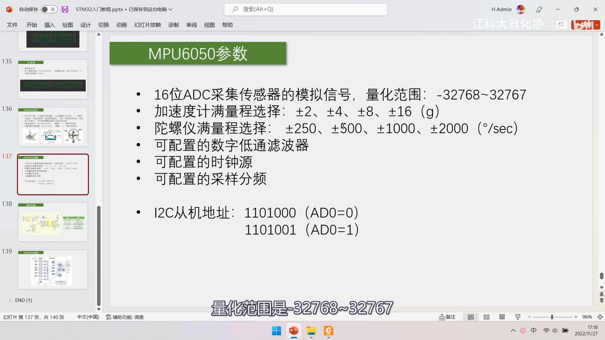
图 3：PPT「MPU6050参数」——16 位 ADC 采集传感器模拟信号、量化范围 −32768～32767；加速度计满量程 ±2、±4、±8、±16（g）；陀螺仪满量程 ±250、±500、±1000、±2000（°/sec）；可配置的数字低通滤波器、时钟源、采样分频；I2C 从机地址 1101000（AD0=0）/ 1101001（AD0=1）；字幕「量化范围是-32768～32767」
4. 硬件电路与引脚
4.1 模块原理图
- 左侧是模块原理图：一个 LDO（低压差线性稳压器） 把 VCC_5V 稳压成 3.3V、一个 LED 电源指示灯、SCL/SDA 各接一个 4.7KΩ 上拉电阻、MPU6050 芯片本身（芯片引脚很多，很多是最小系统里的固定连接，抄参考电路即可），最后把关键信号引到排针（VCC_5V、VCC_3V3、SCL、SDA、XDA、XCL、AD0、INT、GND）；
- SCL/SDA 直接接 STM32 的 GPIO 即可（模块上已经带上拉电阻）；
- 供电：手册查得 MPU6050 芯片 VDD 供电 2.375～3.46V——是3.3V 器件，不能直接接 5V；所以模块设计者加了 3.3V 稳压器，模块的 VCC 输入端可以接 3.3V～5V，经 LDO 输出稳定 3.3V；电源指示灯按需保留（如果已有稳定 3.3V 电源，可以不要这个模块的稳压部分）。
4.2 引脚功能表
| 引脚 | 功能 |
|---|---|
| VCC、GND | 电源 |
| SCL、SDA | I2C 通信引脚（接 STM32 的 GPIO） |
| XCL、XDA | 主机 I2C 通信引脚（MPU6050 作为主机去控制扩展设备） |
| AD0 | 从机地址最低位（板上默认弱下拉到 GND） |
| INT | 中断信号输出 |
- XCL/XDA 的用途：6 轴姿态融合出的姿态角有缺陷——绕 Z 轴的偏航角 Yaw 会漂移、无法用加速度计纠正（相当于坐在车里不看窗外、转弯后就迷失方向），所以可以外接磁力计当「指南针」来纠正；做无人机要定高时还可以外接气压计；
- 把扩展芯片的数据读到 MPU6050 里，由内部 DMP 单元做数据融合和姿态解算；
- 如果不需要 MPU6050 的解算功能，也可以把磁力计/气压计直接挂到同一条 I2C 总线上（I2C 本来就支持多设备）；
- AD0：电路上默认弱下拉到低电平——所以引脚悬空时地址就是 1101000（0x68）；把它拉高就是 1101001；
- INT：中断输出引脚——数据准备好了、自由落体检测、运动检测、零运动检测等事件发生时，都可以让 INT 引脚产生电平跳变；不需要的话这个引脚也不用接（中断相关配置后面再讲）。
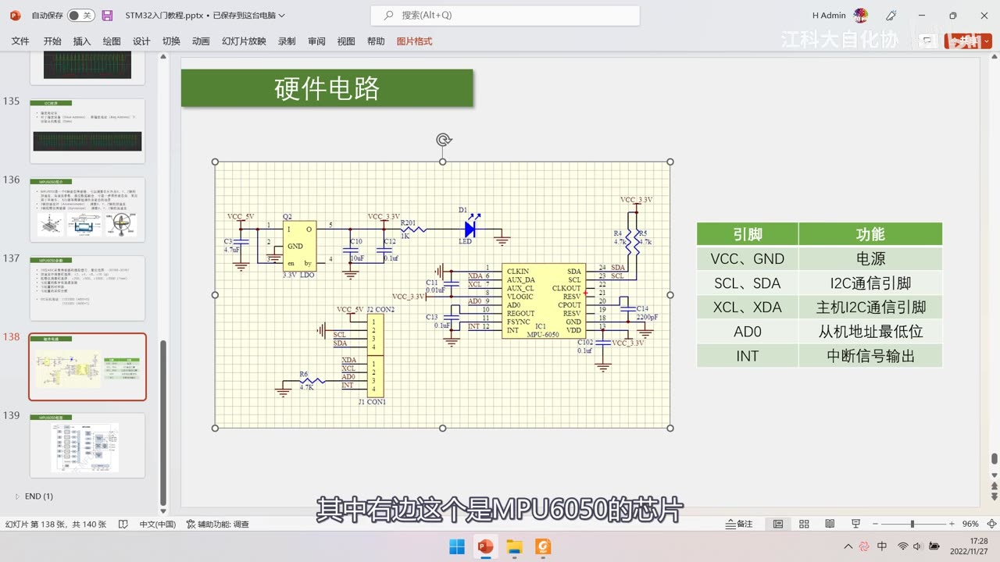
图 4：PPT「硬件电路」——左侧模块原理图（3.3V LDO、LED 电源灯、SCL/SDA 各 4.7K 上拉、MPU-6050 芯片与 J1/J2 排针）；右侧引脚功能表：VCC、GND = 电源；SCL、SDA = I2C 通信引脚；XCL、XDA = 主机 I2C 通信引脚；AD0 = 从机地址最低位；INT = 中断信号输出；字幕「其中右边这个是MPU6050的芯片」
5. 内部框图
- 时钟部分：CLKIN / CLKOUT 时钟输入/输出脚（一般用内部时钟：模块电路里 CLKIN 直接接 GND、CLKOUT 不引出）；
- 传感器部分：X/Y/Z 加速度计、X/Y/Z 陀螺仪各有自己的 Self test（自测） 单元，信号经 ADC 进 Sensor Registers；Temp Sensor（温度传感器） 同样经 ADC；Charge Pump（电荷泵，CPOUT 引脚需外接电容） 给陀螺仪升压；
- 数字部分：Config Registers（配置寄存器）、Interrupt Status Register（中断状态）→ INT 引脚、FIFO（先入先出寄存器，可缓存数据流，本集不用）、Factory Calibration；
- 接口部分：
- Slave I2C and SPI Serial Interface：作为从机与 STM32 通信（MPU-6000 支持 SPI + I2C，MPU-6050 仅支持 I2C）；
- Master I2C Serial Interface + Serial Interface Bypass Mux（接口旁路选择器）：作为主机去和扩展设备通信（AUX_CL / AUX_DA）——旁路选择器拨到一边时辅助 I2C 引脚直接和主 I2C 总线并到一起（STM32 可以直接访问所有设备，STM32 是「大哥」）；拨到另一边时辅助 I2C 由 MPU6050 控制（MPU6050 是 STM32 的小弟、又是扩展设备的大哥）；
- DMP（Digital Motion Processor，数字运动处理器）：硬件姿态解算，配合官方 DMP 库，姿态解算会方便很多（本集只介绍、不深入）；
- Bias & LDO：偏置与稳压（VLOGIC/REGOUT 等引脚）。
5.1 传感器本质与 ADC 全自动转换
- 这么多传感器本质上都相当于「可变电阻」：物理量变化 → 电阻变化 → 分压输出变化的模拟电压 → ADC 量化；
- 芯片内部的转换是全自动的，类似之前学的「AD 连续转换 + DMA 转运」——不用手动启动/搬运，也不存在数据覆盖问题，非常方便。
5.2 自测（Self test）
- 每个传感器都有自测单元，用来验证芯片好坏；
- 做法：先使能自测、读取一次数据；再失能自测、读取一次数据；两者相减得到「自测响应」——如果自测响应落在手册给定的范围内，就说明芯片没问题。
5.3 电荷泵（升压）
- 电荷泵（充电泵）是一种升压电路（OLED 模块里也有）；CPOUT 引脚需要外接电容（手册有说明）；
- 升压原理：先电池与电容并联充电（电容充到电池电压）；再改成串联——电池 5V + 电容 5V → 输出 10V；「凭空把电压升高到两倍」；因为电容电荷少，要趁它没放完电及时并联充电，后面再加电源滤波；
- 陀螺仪内部需要电荷泵升压，所以框图里有这个 CPOUT。
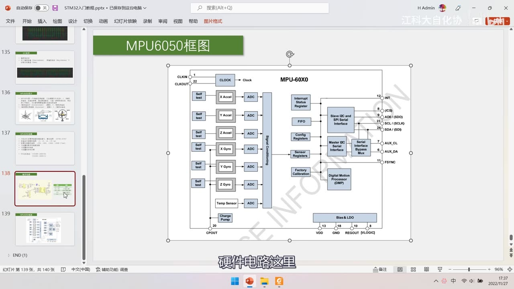
图 5：PPT「MPU6050框图」——标 MPU-60X0 的内部结构：CLKIN/CLKOUT → CLOCK；X/Y/Z Accel 与 X/Y/Z Gyro 各带 Self test → ADC → Sensor Registers；Temp Sensor→ADC；Charge Pump（CPOUT）；Interrupt Status Register → INT；FIFO；Config Registers；Factory Calibration；Slave I2C and SPI Serial Interface（AD0/SDIO、SCL/SCLK、SDA/SDIO、CS）；Master I2C Serial Interface → Serial Interface Bypass Mux → AUX_CL/AUX_DA；FSYNC；Digital Motion Processor（DMP）；Bias & LDO（VDD、GND、REGOUT、VLOGIC）；字幕「硬件电路这里」
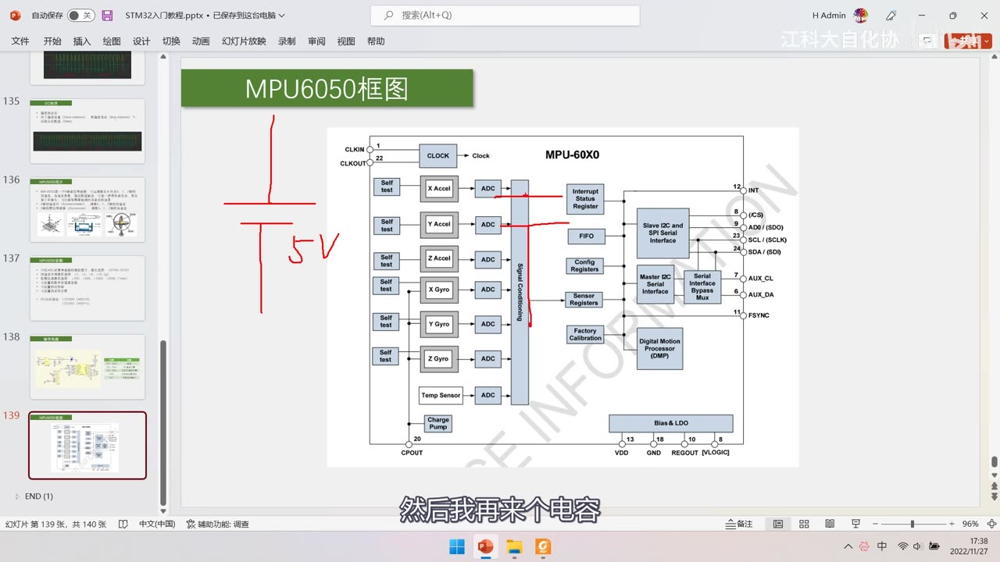
图 6：同一页上的红笔——画了「电池 + 电容 + 5V」的示意，讲电荷泵把并联改串联来升压；字幕「然后我再来个电容」
6. 产品说明书要点
6.1 概述与型号差异
- 芯片是 3 轴 MEMS 陀螺仪 + 3 轴 MEMS 加速度计，内置 DMP；
- MPU-6000 支持 SPI + I2C，MPU-6050 仅支持 I2C（引脚上也有差异）；
- 特性列表里有 9 轴运动融合（配合扩展磁力计）等内容，本集不深入。
6.2 电气特性（6.3 节）
- VDD = 2.375 ～ 3.46V（VLOGIC 仅 MPU-6050 有，为 1.8V ±5% 或 VDD）；
- 温度传感器：范围 −40 ～ +85 ℃、灵敏度 340 LSB/℃、零点偏移 −521 LSB、线性度 ±1℃；
- 各工作模式电流（陀螺+加速度+DMP 约 3.9mA 等）；
- 绝对最大额定值：VDD −0.5 ～ +6V——超过 6V 就会损坏。
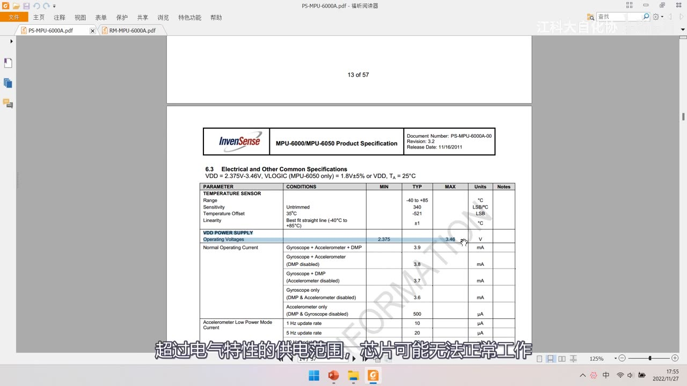
图 7：产品说明书 6.3 Electrical and Other Common Specifications（PS-MPU-6000A-00 Rev 3.2、11/16/2011、13 of 57）——VDD = 2.375V～3.46V、VLOGIC = 1.8V±5% 或 VDD；温度传感器 Range −40～+85℃、Sensitivity 340 LSB/℃、Temperature Offset −521 LSB、Linearity ±1℃；VDD POWER SUPPLY 工作电压 2.375～3.46V（黄框）；各模式电流 3.9mA 等；字幕「超过电气特性的供电范围，芯片可能无法正常工作」
6.3 I2C 通信时序表
- Single-Byte Write（单字节写）：Master：
S→AD+W→RA→DATA→P；Slave：在AD+W、RA、DATA之后各回一个ACK； - Burst Write（连续写）：
S→AD+W→RA→DATA→DATA→ … →P（每个 DATA 后都有 ACK）；写多个字节时从机会自动递增寄存器地址； - 指定地址读：先写地址（
S+AD+W+RA），再重复起始转读，最后一个数据要给「非应答」再停止——与上集 PPT 的时序完全一致； - I2C 时序特性表：给出 SCL 频率上限、电平上升/下降沿时间等要求——不过I2C 是同步时序，对时间要求不严格，速率可以慢，只要电平变化不是快到转瞬即逝，芯片都能跟上；SPI 时序部分本集跳过。
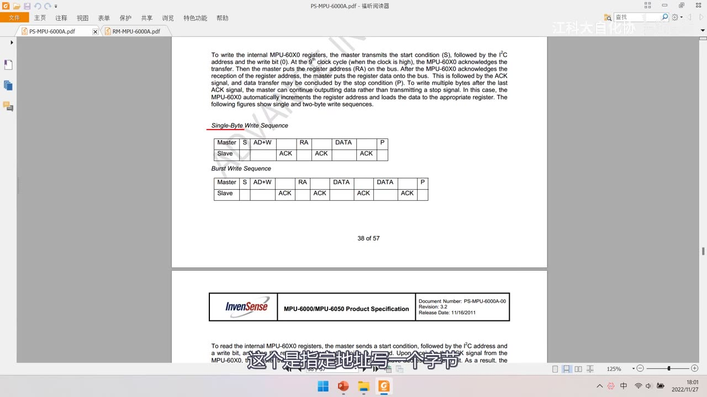
图 8：产品说明书里的 I2C 写时序——正文「To write the internal MPU-60X0 registers, the master transmits the start condition (S), followed by the I2C address and the write bit (0)… the master puts the register address (RA)… followed by ACK… register data… stop condition (P)」；Single-Byte Write Sequence（Master：S、AD+W、RA、DATA、P；Slave：ACK、ACK、ACK）与 Burst Write Sequence（Master：S、AD+W、RA、DATA、DATA、P；Slave：ACK×4）；页脚 38 of 57；字幕「这个是指定地址读的一个时序」
7. 寄存器（寄存器映像手册精读）
STM32 有库函数封装，对这个芯片则要自己研究寄存器——「研究一下寄存器还是很有必要的」。寄存器映像手册开头是 Register Map 总表，之后是每个寄存器每一页的详细说明；每个寄存器都是 8 位。
7.1 Register Map 总表
- 列：Addr(Hex) / Addr(Dec) / Register Name / Serial I/F / Bit7 ～ Bit0；
- 帧内可见的部分（总表前半段）：0x19/25
SMPLRT_DIV、0x1A/26CONFIG、0x1B/27GYRO_CONFIG、0x1C/28ACCEL_CONFIG、0x1D/29FF_THR、0x1E/30FF_DUR、0x1F/31MOT_THR、0x20/32MOT_DUR、0x21/33ZRMOT_THR、0x22/34ZRMOT_DUR、0x23/35FIFO_EN、0x24/36I2C_MST_CTRL、0x25/37I2C_SLV0_ADDR… 0x2C/44I2C_SLV2_REG； - 总表后半段（另一帧）：0x69/105
MOT_DETECT_CTRL、0x6A/106USER_CTRL、0x6B/107PWR_MGMT_1、0x6C/108PWR_MGMT_2、0x72/114FIFO_COUNTH、0x73/115FIFO_COUNTL、0x74/116FIFO_R_W、0x75/117WHO_AM_I； _H/_L后缀：表示内部寄存器值的高字节 / 低字节（例如 ACCEL_XOUT_H 含 16 位 X 轴加速度的最高 8 位）；- ⚠ 注意：本集帧里的总表只覆盖了前半段与后半段，数据寄存器段（如 ACCEL_XOUT_H 那一组）地址没有出现在画面中——需要时以寄存器映像手册为准（详见存疑）。
![图 9：寄存器映像手册「3 Register Map」总表——列 Addr(Hex)/Addr(Dec)/Register Name/Serial I/F/Bit7～Bit0；可见 0x01 AUX_VDDIO、0x19 SMPLRT_DIV（黄色高亮，SMPLRT_DIV 的 7:0 位）、0x1A CONFIG（EXT_SYNC_SET 的 2:0 位、DLPF_CFG 的 2:0 位）、0x1B GYRO_CONFIG（FS_SEL 的 1:0 位）、0x1C ACCEL_CONFIG（XA_ST/YA_ST/ZA_ST、AFS_SEL 的 1:0 位、ACCEL_HPF 的 2:0 位）、0x1D FF_THR、0x1E FF_DUR、0x1F MOT_THR、0x20 MOT_DUR、0x21～0x22 ZRMOT、0x23 FIFO_EN、0x24 I2C_MST_CTRL … 0x2C I2C_SLV2_REG；左侧书签可见 SMPLRT_DIV/CONFIG/GYRO_CONFIG/ACCEL_CONFIG/ACCEL_XOUT_H/TEMP_OUT_H/GYRO_XOUT_H/PWR_MGMT_1/PWR_MGMT_2/WHO_AM_I；字幕「所以研究一下寄存器还是很有必要的」](../assets/images/stm32-32/09-register-map.jpg)
图 9：寄存器映像手册「3 Register Map」总表——列 Addr(Hex)/Addr(Dec)/Register Name/Serial I/F/Bit7～Bit0；可见 0x01 AUX_VDDIO、0x19 SMPLRT_DIV（黄色高亮，SMPLRT_DIV 的 7:0 位）、0x1A CONFIG（EXT_SYNC_SET 的 2:0 位、DLPF_CFG 的 2:0 位）、0x1B GYRO_CONFIG（FS_SEL 的 1:0 位）、0x1C ACCEL_CONFIG（XA_ST/YA_ST/ZA_ST、AFS_SEL 的 1:0 位、ACCEL_HPF 的 2:0 位）、0x1D FF_THR、0x1E FF_DUR、0x1F MOT_THR、0x20 MOT_DUR、0x21～0x22 ZRMOT、0x23 FIFO_EN、0x24 I2C_MST_CTRL … 0x2C I2C_SLV2_REG；左侧书签可见 SMPLRT_DIV/CONFIG/GYRO_CONFIG/ACCEL_CONFIG/ACCEL_XOUT_H/TEMP_OUT_H/GYRO_XOUT_H/PWR_MGMT_1/PWR_MGMT_2/WHO_AM_I；字幕「所以研究一下寄存器还是很有必要的」
7.2 SMPLRT_DIV（采样率分频，0x19 / 25，读写）
- 公式：
Sample Rate = Gyroscope Output Rate / (1 + SMPLRT_DIV)——采样率（数据刷新率）由陀螺仪输出时钟频率除以「1 + 分频值」得到； - 陀螺仪输出率：DLPF 关闭时为 8kHz、DLPF 开启时为 1kHz；
- 加速度计输出率固定为 1kHz（当采样率高于 1kHz 时，同一个加速度采样可能被重复输出到 FIFO/DMP/传感器寄存器）；
- 这里的「时钟」就是 PWR_MGMT_1 里选的时钟源（手册这一页直接以陀螺仪晶振作例子）。
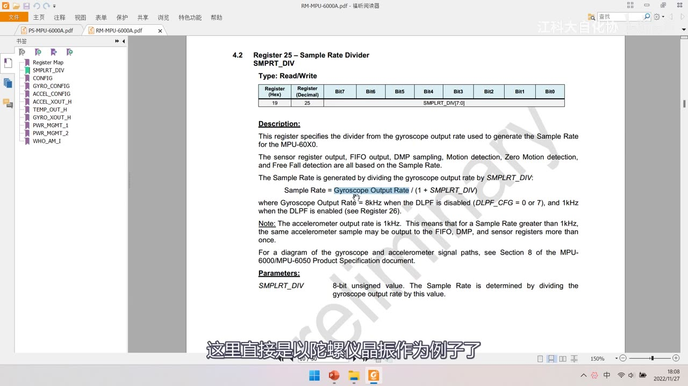
*图 10：手册「4.2 Register 25 – Sample Rate Divider SMPLRT_DIV」——Type Read/Write，Register(Hex) 19 / Register(Decimal) 25 / Bit7～Bit0 = SMPLRT_DIV 的 7:0 位；正文给出 Sample Rate = Gyroscope Output Rate / (1 + SMPLRT_DIV)，并说明 Gyroscope Output Rate = 8kHz（DLPF 关闭，DLPF_CFG = 0 或 7）/ 1kHz（DLPF 开启），加速度计输出率固定 1kHz；字幕「这里直接是以陀螺仪晶振作为例子了」*
7.3 CONFIG（0x1A / 26，读写）
- 内容：EXT_SYNC_SET[2:0] 外部同步 设置 + DLPF_CFG[2:0] 数字低通滤波配置；
- 低通滤波器的作用：让输出数据更平滑——「如果你觉得输出数据抖动太厉害，就开低通滤波」；DLPF 开启/关闭还会影响陀螺仪输出率（1kHz/8kHz，见 7.2）；
- （具体档位表本集没有逐档念，需要时查手册。）
7.4 GYRO_CONFIG（0x1B / 27，读写）
- 位：XG_ST / YG_ST / ZG_ST（三轴陀螺自测位） + FS_SEL[1:0]（满量程选择），Bit2～Bit0 保留；
- 自测响应定义：
Self-test response = 使能自测时的传感器输出 − 不使能自测时的传感器输出——落在手册电气特性表给的范围之内就算通过； - FS_SEL 满量程表：
| FS_SEL | 满量程 |
|---|---|
| 0 | ±250 °/s |
| 1 | ±500 °/s |
| 2 | ±1000 °/s |
| 3 | ±2000 °/s |
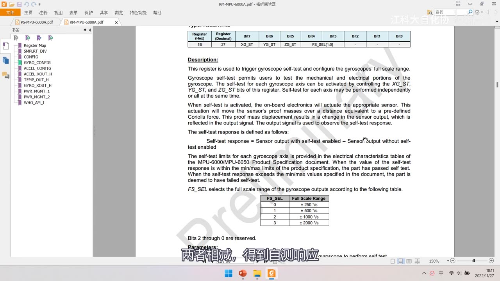
图 11：手册 GYRO_CONFIG（Register Hex 1B / Decimal 27）页——Bit 位为 XG_ST、YG_ST、ZG_ST、FS_SEL 的 1:0 位；正文说明陀螺自测与「Self-test response = Sensor output with self-test enabled − Sensor output without self-test enabled」；FS_SEL 表：0=±250 °/s、1=±500 °/s、2=±1000 °/s、3=±2000 °/s；Bits 2 through 0 are reserved；字幕「两者相减，得到自测响应」
7.5 ACCEL_CONFIG（0x1C / 28，读写）与加速度数据寄存器
- 位：XA_ST / YA_ST / ZA_ST（三轴加速度自测位） + AFS_SEL[1:0]（满量程） + ACCEL_HPF[2:0]（高通滤波）；
- AFS_SEL 满量程与灵敏度表（手册原表）：
| AFS_SEL | 满量程 | 灵敏度 |
|---|---|---|
| 0 | ±2 g | 16384 LSB/mg |
| 1 | ±4 g | 8192 LSB/mg |
| 2 | ±8 g | 4096 LSB/mg |
| 3 | ±16 g | 2048 LSB/mg |
- 数据寄存器读法：加速度 ACCEL_XOUT / YOUT / ZOUT 每个都是 16 位、二进制补码存储，高字节
_H+ 低字节_L——读出高 8 位左移 8 位、或上低 8 位，存进 int16 变量里，就得到有符号的数据； - 温度传感器数据同理（16 位、补码）；内部有一套寄存器集、还有一套用户读的寄存器集（双缓冲），保证一次突发读取拿到的是同一采样时刻的数据。
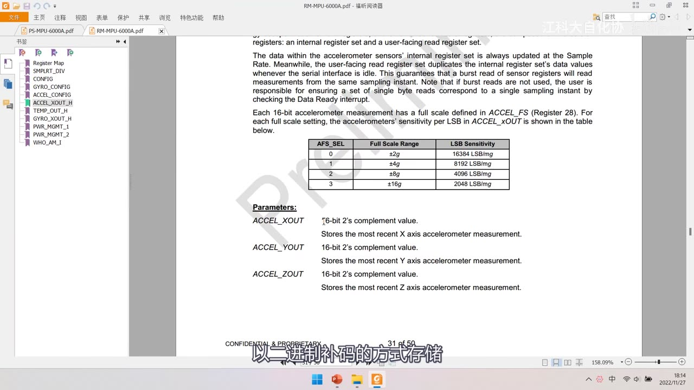
图 12：手册加速度数据寄存器页——AFS_SEL 表：0=±2g / 16384 LSB/mg、1=±4g / 8192 LSB/mg、2=±8g / 4096 LSB/mg、3=±16g / 2048 LSB/mg；下方 Parameters 说明 ACCEL_XOUT/YOUT/ZOUT 都是 16-bit 2's complement value（最近一次 X/Y/Z 轴加速度测量值）；页脚 31 of 50；字幕「以二进制补码的方式存储」
7.6 PWR_MGMT_1（电源管理 1，0x6B / 107，读写）
- 位：DEVICE_RESET（写 1 复位所有寄存器到默认值）、SLEEP、CYCLE、TEMP_DIS（禁用内部温度传感器）、CLKSEL[2:0]；
- SLEEP = 1 → 低功耗睡眠模式；CYCLE = 1 且 SLEEP 关闭 → Cycle Mode（睡眠/唤醒交替，按 LP_WAKE_CTRL 设定的频率唤醒采一次数据），比较省电；
- CLKSEL 时钟源表：
| CLKSEL | 时钟源 |
|---|---|
| 0 | 内部 8MHz 振荡器（上电默认） |
| 1 | PLL with X axis gyroscope reference |
| 2 | PLL with Y axis gyroscope reference |
| 3 | PLL with Z axis gyroscope reference |
| 4 | PLL with external 32.768kHz reference |
| 5 | PLL with external 19.2MHz reference |
| 6 | Reserved |
| 7 | Stops the clock and keeps the timing generator in reset |
- 手册原话：上电默认用内部振荡器，但「强烈建议」改用某一个陀螺仪（或外部时钟）作时钟参考，以提高稳定性——因为陀螺仪晶振更精确。
![图 13：手册 PWR_MGMT_1 页的 CLKSEL 时钟源表——0=Internal 8MHz oscillator、1=PLL with X axis gyroscope reference、2=Y、3=Z、4=PLL with external 32.768kHz reference、5=PLL with external 19.2MHz reference、6=Reserved、7=Stops the clock and keeps the timing generator in reset；上方正文「Upon power up, the MPU-60X0 clock source defaults to the internal oscillator. However, it is highly recommended that the device be configured to use one of the gyroscopes (or an external clock source) as the clock reference for improved stability」](../assets/images/stm32-32/13-clksel.jpg)
图 13：手册 PWR_MGMT_1 页的 CLKSEL 时钟源表——0=Internal 8MHz oscillator、1=PLL with X axis gyroscope reference、2=Y、3=Z、4=PLL with external 32.768kHz reference、5=PLL with external 19.2MHz reference、6=Reserved、7=Stops the clock and keeps the timing generator in reset；上方正文「Upon power up, the MPU-60X0 clock source defaults to the internal oscillator. However, it is highly recommended that the device be configured to use one of the gyroscopes (or an external clock source) as the clock reference for improved stability」
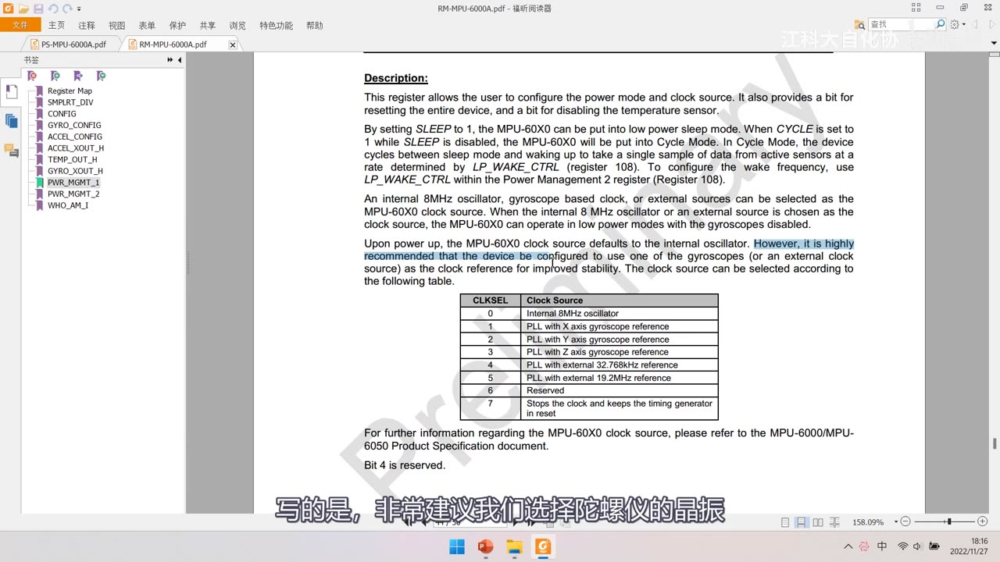
图 14：同一页的描述段——SLEEP 置 1 进低功耗睡眠；CYCLE 置 1 且 SLEEP 关闭进 Cycle Mode（在睡眠与唤醒之间循环、按 LP_WAKE_CTRL 的频率唤醒采样）；时钟源可选内部 8MHz/陀螺时钟/外部时钟；字幕「写的是，非常建议我们选择陀螺仪的晶振」
7.7 PWR_MGMT_2（电源管理 2，0x6C / 108，读写）
- 位：LP_WAKE_CTRL[1:0]（低功耗模式下的唤醒频率） + STBY_XA / STBY_YA / STBY_ZA / STBY_XG / STBY_YG / STBY_ZG（各轴待机位）；
- LP_WAKE_CTRL 唤醒频率表：
| LP_WAKE_CTRL | 唤醒频率 |
|---|---|
| 0 | 1.25 Hz |
| 1 | 2.5 Hz |
| 2 | 5 Hz |
| 3 | 10 Hz |
- STBY_x 位置 1 就使对应轴进入待机；注意手册提醒：如果某个陀螺轴正被用作时钟源、又把该轴置为待机，时钟源会自动切回内部 8MHz 振荡器。
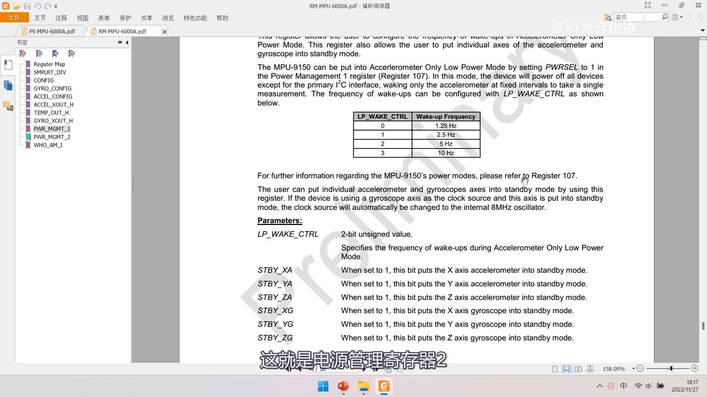
图 15：手册 PWR_MGMT_2 页——LP_WAKE_CTRL 表：0=1.25 Hz、1=2.5 Hz、2=5 Hz、3=10 Hz；Parameters 说明 LP_WAKE_CTRL 是 2 位无符号数，STBY_XA/YA/ZA/XG/YG/ZG 置 1 分别让 X/Y/Z 加速度计、X/Y/Z 陀螺仪进入待机；字幕「这就是电源管理寄存器2」
7.8 WHO_AM_I（0x75 / 117，只读）与复位值
- WHO_AM_I 只读、地址不可改：ID 号中间 6 位固定为 110100（就是芯片的 I2C 地址的一部分），最高位和最低位都是 0——所以读这个寄存器，值固定为 0x68；用 AD0 引脚改地址也不影响它（AD0 改变的是 I2C 寻址地址，不是 WHO_AM_I 的值）；
- 手册注释：除 Register 107（PWR_MGMT_1）复位值 0x40、Register 117（WHO_AM_I）复位值 0x68 外，其余寄存器复位值都是 0x00；
- 由此推出：芯片上电默认处于睡眠模式——因为 PWR_MGMT_1 复位值 0x40 = 0100 0000，次高位 SLEEP = 1；所以操作其它寄存器之前，必须先清 SLEEP（写 PWR_MGMT_1），否则操作无效。
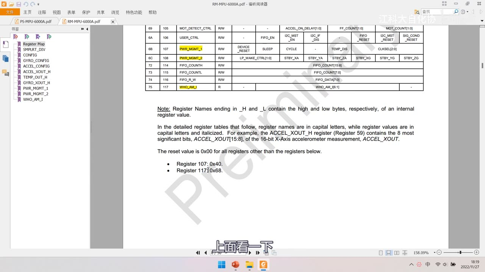
*图 16：寄存器总表后半段 + 复位值注释——0x69/105 MOT_DETECT_CTRL、0x6A/106 USER_CTRL、0x6B/107 PWR_MGMT_1（黄色，DEVICE_RESET/SLEEP/CYCLE/TEMP_DIS/CLKSEL 的 2:0 位）、0x6C/108 PWR_MGMT_2（黄色，LP_WAKE_CTRL 的 1:0 位 与 STBY_XA…STBY_ZG）、0x72/114 FIFO_COUNTH、0x73/115 FIFO_COUNTL、0x74/116 FIFO_R_W、0x75/117 WHO_AM_I；下方注释「Reset value is 0x00 for all registers other than the registers below: Register 107: 0x40 / Register 117: 0x68」；字幕「上面看一下」*
坑与易错点
- MPU6050 的陀螺仪测的是「角速度」不是角度：要得到角度必须积分，而积分会累积漂移——这也是要和加速度计融合的原因。
- 只用加速度计算倾角只在静止时准：运动加速度（汽车加速、斜坡停车）会让结果跑偏。
- 满量程别设太小：数据超量程会削顶；但也别设太大——满量程越大分辨率越粗（±16g 时 2048 LSB/g，±2g 时 16384 LSB/g）。
- 地址两种表示别混：7 位地址 0x68；发字节时用 0xD0（写）/0xD1（读）。若把 0x68 直接当发送字节用就错了。
- AD0 引脚默认弱下拉到 GND：所以悬空时地址是 0x68；拉高变 0x69（1101001）。
- VDD 不能接 5V：芯片 VDD 只 2.375～3.46V，绝对最大 6V；模块能接 5V 是靠板上的 3.3V LDO，千万别把 5V 直接怼到芯片 VDD 上。
- SCL/SDA 要接 GPIO 并配开漏/带上拉：模块已带 4.7K 上拉，SCL/SDA 不是推挽。
- 上电默认 SLEEP（PWR_MGMT_1 复位值 0x40）：不清 SLEEP 就操作其它寄存器是无效的——这是后面写代码的第一个坑。
- CLKSEL 建议改成陀螺仪 PLL：手册明确「强烈建议」，默认内部 8MHz 振荡器不够稳。
- 数据寄存器是 16 位补码：必须
_H左移 8 位或_L，再存进 int16；直接拼成 uint16 会把负值读成很大的正数。 - 加速度灵敏度单位是 LSB/mg：16384 LSB/mg 的「mg」是毫 g，换算数据时注意（本集未展开换算）。
- 温度传感器不是主用途：量程 −40～+85℃、340 LSB/℃、偏移 −521 LSB；本集没有给完整换算公式，需要时查手册。
- DMP/FIFO/XCL·XDA 扩展本集都没用到：FIFO「本节暂时不用」，DMP 只介绍，XCL/XDA 讲用途不写代码。
- 寄存器地址以手册为准：本集画面里的总表只截到部分地址段，写代码时按寄存器映像手册核对（尤其数据寄存器组）。
时间轴
| 时间 | 内容 |
|---|---|
| 0:01 | 开场：本小节继续学习 I2C 通信 |
| 0:15 | 即使外挂芯片的各种寄存器不在 STM32 内部，仍可通过通信协议读写 |
| 0:45 | 打开 MPU6050 资料文件夹，里面有两份手册 |
| 0:49 | 一份是产品说明书，一份是 RM 寄存器映像 |
| 1:10 | 产品说明书封面：InvenSense MPU-6000/6050，Revision 3.2，11/16/2011 |
| 1:15 | 再打开寄存器映像手册 |
| 1:28 | 总表之后是每个寄存器、每一位的详细解释 |
| 1:43 | 写代码、实际操作硬件时，寄存器描述必不可少 |
| 2:09 | 英文不好可以用翻译软件辅助 |
| 2:23 | 回到 PPT，先对芯片有个大体认识 |
| 2:33 | MPU6050 简介：一个 6 轴姿态传感器 |
| 2:40 | 可以测量芯片自身 XYZ 三轴的加速度和角速度 |
| 2:55 | 再集成 3 轴磁场就是 9 轴姿态传感器 |
| 3:14 | 再加气压传感器就是 10 轴，气压反映高度信息 |
| 3:47 | 通过数据融合可得到姿态角，也叫欧拉角 |
| 4:01 | 欧拉角是机体相对于初始三个轴的夹角 |
| 4:26 | 机头左右转这个轴的夹角叫偏航（Yaw） |
| 4:34 | 欧拉角能表达物体此刻的姿态 |
| 4:48 | 得到精确稳定的欧拉角至关重要 |
| 5:22 | 本集侧重点是 I2C 通信，姿态解算暂时不涉及 |
| 6:03 | 3 轴加速度计，英文 Accelerometer |
| 6:27 | 加速度计的作用，看左下角的图 |
| 6:45 | XYZ 轴定义：垂直于芯片的轴为 Z 轴 |
| 6:56 | 中间图是加速度计的结构图：滑块 + 弹簧 + 电位器 |
| 7:23 | 滑块移动带动电位器，测分压电压得到加速度 |
| 7:40 | 根据牛顿第二定律 F = ma，测力就能得到加速度 |
| 8:00 | 芯片内想象成六个测力计组成的正方体 + 单位质量小球 |
| 8:40 | 静置水平时只有底面受力：XY=0、Z=+1g |
| 8:59 | 自由落体时所有面都不受力：XYZ 全 0 |
| 9:08 | 向左倾斜时底面和左面同时受力，可算倾角 |
| 9:22 | 但只用加速度计求倾角，只在静置时正确 |
| 9:30 | 加速度分重力加速度和运动加速度，运动会干扰 |
| 9:55 | 汽车突然加速、停在斜坡上都会让座椅底面和靠背同时受力 |
| 10:21 | 陀螺仪，英文 Gyroscope |
| 10:34 | 右下角图是陀螺仪的机械模型：旋转轮 + 平衡环 |
| 10:45 | 旋转轮高速旋转，靠角动量守恒保持转轴方向 |
| 11:05 | 外部转动时内部转轴不转，平衡环连接处产生角度偏差 |
| 11:11 | 测电位器电压就能得到角度偏差 |
| 11:16 | 但 MPU6050 的陀螺仪测的是角速度，注意 |
| 11:25 | 测 XYZ 轴角速度，可想象成游乐园的旋转飞椅 |
| 12:06 | 角速度积分可得到角度，但误差会累积漂移 |
| 12:40 | 陀螺仪动态稳定，加速度计静态稳定，特性互补 |
| 13:04 | 所以取长补短做数据融合，实际解算更复杂 |
| 13:13 | 加速度计和陀螺仪原理讲完 |
| 13:17 | 接下来看几个 MPU6050 参数 |
| 13:29 | 16 位 ADC 采集模拟信号，量化范围 −32768～32767 |
| 13:47 | 传感器本质是可变电阻→分压→ADC |
| 14:25 | 16 位数据分两个字节存储 |
| 15:11 | 满量程对应 AD 最大值，就像 ADC 的参考电压 |
| 15:41 | 加速度计满量程可选 ±2、±4、±8、±16 g |
| 16:03 | 运动剧烈选大量程，要精细选小量程 |
| 16:21 | 满量程越小，测量越细腻；AD 值与物理量线性 |
| 16:51 | 数字低通滤波器：输出抖动大就开 |
| 17:38 | 可配置的时钟源和采样分频，配合使用控制 AD 转换快慢 |
| 18:06 | 从机地址：AD0=0 时 1101000，AD0=1 时 1101001 |
| 18:25 | 1101000 转十六进制是 0x68 |
| 18:45 | 若认为 0x68 是地址，发字节时要左移 1 位再或读写位 |
| 19:34 | 0x68 左移 1 位是 0xD0，0xD0 写、0xD1 读 |
| 19:46 | 两种表示方式都有出现，作者喜欢含读写位的写法 |
| 20:56 | 参数看完，看硬件电路 |
| 21:01 | 左边是模块原理图，有 LDO 低压差线性稳压器 |
| 21:19 | 芯片本身引脚很多，很多是最小系统的固定连接 |
| 21:38 | 引出的引脚：两个是电源，SCL/SDA 是 I2C 通信 |
| 21:57 | 接线时直接把 SCL/SDA 接 GPIO 即可 |
| 22:06 | 还有 XCL 和 XDA，是主机 I2C 通信引脚 |
| 22:16 | 设计这两个引脚是为了扩展芯片功能 |
| 22:24 | 6 轴融合的姿态角有缺陷：偏航角漂移无法用加速度计纠正 |
| 22:45 | 所以要外接磁力计当参考，做无人机还要气压计 |
| 23:19 | 扩展芯片数据读到 MPU6050 里，由 DMP 做融合解算 |
| 23:38 | 也可以把扩展设备直接挂同一条 I2C 总线 |
| 24:11 | 然后是 AD0，从机地址最低位 |
| 24:25 | 电路中默认弱下拉到低电平，悬空时地址是 0x68 |
| 24:39 | INT 是中断输出引脚，数据就绪、自由落体检测等可触发 |
| 25:11 | LDO 部分供电逻辑：VDD 2.375～3.46V，不能直接接 5V |
| 25:30 | 模块加了 3.3V 稳压器，VCC 端可接 3.3～5V |
| 25:47 | 电源指示灯按项目需要决定要不要 |
| 26:15 | 看芯片的模块框图 |
| 26:24 | 有时钟输入/输出脚，一般用内部时钟 |
| 26:51 | 这么多传感器本质上都是可变电阻→分压→ADC |
| 27:13 | 内部转换全自动，类似 AD 连续转换 + DMA |
| 27:40 | 每个传感器都有自测单元，用来验证芯片好坏 |
| 27:57 | 自测：使能读一次、失能读一次，相减得自测响应 |
| 28:22 | 电荷泵，CPOUT 引脚需要外接电容 |
| 28:47 | 电荷泵升压原理：电池与电容并联充电，再串联升压 |
| 29:24 | 陀螺仪内部需要电荷泵升压 |
| 30:06 | FIFO 是先入先出寄存器，本节暂时不用 |
| 30:12 | 配置寄存器可以对内部各电路进行配置 |
| 30:28 | DMP 是数字运动处理器，配合官方 DMP 库做姿态解算 |
| 30:59 | 从机 I2C/SPI 接口用来和 STM32 通信 |
| 31:06 | 主机 I2C 接口用来和扩展设备通信 |
| 31:16 | 接口旁路选择器可把两路总线并在一起 |
| 31:49 | 本节不会用到扩展功能 |
| 32:09 | PPT 介绍完，开始看两份手册 |
| 32:25 | 先看产品说明书 |
| 32:41 | 概述：3 轴 MEMS 陀螺仪 + 3 轴 MEMS 加速度计 |
| 33:45 | 型号差异：MPU-6000 支持 SPI+I2C，MPU-6050 仅支持 I2C |
| 34:14 | 下面是产品特性列表 |
| 34:25 | 然后是电气特性表，查具体指标在这里找 |
| 34:41 | I2C 时序特性：SCL 超过数值芯片就跟不上 |
| 34:58 | 同步时序对时间要求不严格，速率可以慢 |
| 35:12 | SPI 时序要求，本集不看 |
| 35:34 | 绝对最大额定值 VDD −0.5～+6V，超 6V 损坏 |
| 36:07 | 下面是应用信息、XYZ 轴定义、引脚描述 |
| 36:32 | 参考电路：电容取值有参考示例 |
| 36:52 | 中断章节：自由落体检测、运动检测、零运动检测 |
| 37:01 | 发生时可在 INT 引脚输出电平跳变 |
| 38:02 | 高通滤波器用来滤除静置时的重力加速度 |
| 39:05 | 手册里给出 I2C 地址、时序介绍 |
| 39:57 | Single-Byte Write：S + AD+W + RA + DATA + P，从机应答 |
| 40:15 | Burst Write 连续写多字节，地址自动递增 |
| 40:18 | 指定地址读：开始、地址+写、寄存器地址 |
| 40:35 | 最后要给非应答，然后停止 |
| 40:48 | SPI 接口部分不看了 |
| 41:29 | 最后是尺寸信息和 PCB 布线参考 |
| 41:54 | 寄存器还是非常重要，研究一下很有必要 |
| 42:16 | 寄存器映像手册前面有寄存器总表 |
| 42:30 | 总表列：地址 Hex/Dec、名称、Serial I/F、位 7～0 |
| 42:42 | 后面是每个寄存器每一位的名字，每个寄存器都是 8 位 |
| 43:35 | 采样频率分频器 SMPLRT_DIV（0x19/25） |
| 43:39 | 公式：采样频率 = 陀螺仪输出时钟频率 / (1 + 分频值) |
| 43:45 | DLPF 关闭时陀螺输出 8kHz，开启时 1kHz |
| 44:14 | CONFIG（0x1A/26）：外部同步设置和低通滤波器配置 |
| 44:34 | 低通滤波让输出数据更平滑 |
| 44:47 | GYRO_CONFIG（0x1B/27）：自测位和满量程选择 |
| 45:35 | 自测响应范围在电气特性表里查 |
| 46:08 | FS_SEL：0=±250、1=±500、2=±1000、3=±2000 °/s |
| 46:13 | ACCEL_CONFIG（0x1C/28） |
| 46:23 | AFS_SEL： |
| 46:32 | 数据寄存器是 16 位有符号数、二进制补码 |
| 46:44 | 读出高低 8 位 |
| 46:56 | 温度传感器数据同样操作 |
| 47:09 | 电源管理寄存器 1（0x6B/107）：DEVICE_RESET/SLEEP/CYCLE/CLKSEL |
| 47:22 | CLKSEL 时钟源：内部 8M、XYZ 陀螺 PLL、外部 32.768k、19.2M |
| 47:55 | 强烈建议选陀螺仪晶振作时钟源，更精确稳定 |
| 48:24 | 电源管理寄存器 2（0x6C/108）：唤醒频率和待机位 |
| 48:40 | LP_WAKE_CTRL：0=1.25Hz、1=2.5Hz、2=5Hz、3=10Hz |
| 48:57 | STBY_x 各位置 1 让对应轴待机 |
| 49:05 | WHO_AM_I（0x75/117）是只读寄存器 |
| 49:12 | ID 号中间 6 位固定 110100，即芯片 I2C 地址 |
| 49:20 | 最高位最低位都是 0，所以读出固定为 0x68 |
| 49:25 | AD0 改的是 I2C 寻址地址，不影响 WHO_AM_I |
| 49:36 | 手册注释：除 107 复位值 0x40、117 复位值 0x68，其余都是 0x00 |
| 49:47 | PWR_MGMT_1 复位值 0x40，次高位 SLEEP=1 |
| 50:00 | 所以芯片上电默认是睡眠模式 |
| 50:05 | 要先清 SLEEP，否则操作其它寄存器无效 |
| 50:12 | 接下来的任务：实现 I2C 通信、读写这些寄存器来操控 MPU6050 |
存疑
- 本集文本来自画面硬字幕的 OCR（PP-OCRv4，source=subtitle-ocr，642 段），不是 ASR。错字：
I2C→ 「12C」（18 处）、加速度→ 「功速度/加可速度」、偏航→ 「扁航」、详细→ 「洋细」、看到→ 「香到」、引脚→ 「引1脚」；另有手册页面水印与英文正文（CONFIDENTIAL & PROPRIETARY、PRELIMINARY、InvenSense、整句英文描述）混入，这些不是口述内容，已剔除/校正。 - 本集无代码：全程 PPT + PDF 手册精读，没有 Keil 操作；软件 I2C 代码在 [10-3]、硬件 I2C 在 [10-4]。
- 数据寄存器组的地址没有帧证据：本集总表帧只覆盖 0x01～0x2C 与 0x61～0x75 两段，数据寄存器组只在图 16 的 Notes 段出现过十进制
Register 59（=0x3B），画面没有出现十六进制地址、口述也没有报数字——本笔记只写「高字节_H+ 低字节_L」的读法，没有写具体地址；实际用到时必须再查寄存器映像手册。 - 陀螺仪 LSB 灵敏度数值本集没有出现：只看到 FS_SEL 满量程表（±250/±500/±1000/±2000 °/s），没有 131 / 65.5 / 32.8 / 16.4 LSB/(°/s) 这类数字（加速度计的 16384/8192/4096/2048 LSB/mg 是手册画面里有的）——本笔记不写这些数值。
- 温度换算只有参数、没有公式：手册画面给出 340 LSB/℃、偏移 −521 LSB，但完整的温度换算公式本集没有讲，本笔记不补公式。
- DLPF_CFG 的具体档位表没有逐一核对：本集只讲「DLPF 关＝8kHz、开＝1kHz」「抖动大就开低通」，没有逐档念档位数值——本笔记不抄档位表。
- 地址的两种表述并存：官方手册用「0x68 + 读写位」，作者偏爱「0xD0/0xD1（含读写位）」——本笔记两种都写并说明来源，代码里用哪种以 [10-3]/[10-4] 实际代码为准。
- 寄存器复位值：Register 107 = 0x40、Register 117 = 0x68 有帧证据（注释截图）；其余「0x00」是手册原文（同一句注释）。
- 自测的具体范围值只在电气特性表里（本集翻到但未逐条念），笔记只写「落在手册范围内即正常」。
- 片尾 50:12 明确说「接下来实现 I2C 通信、读写寄存器操控 MPU6050」，没有点名下集编号；按课程顺序软件 I2C 代码在 [10-3]。